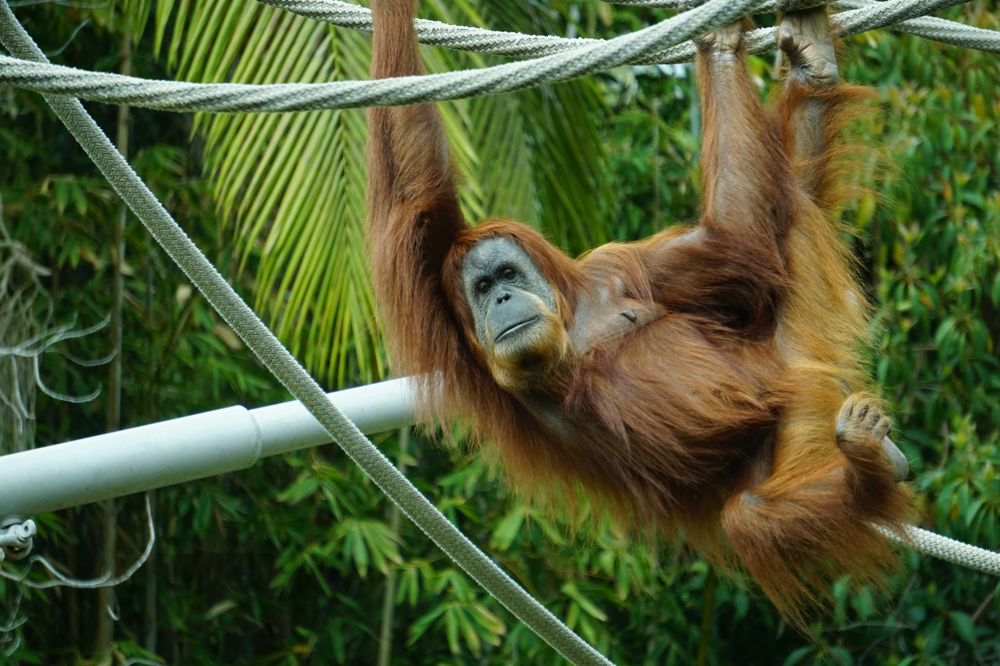
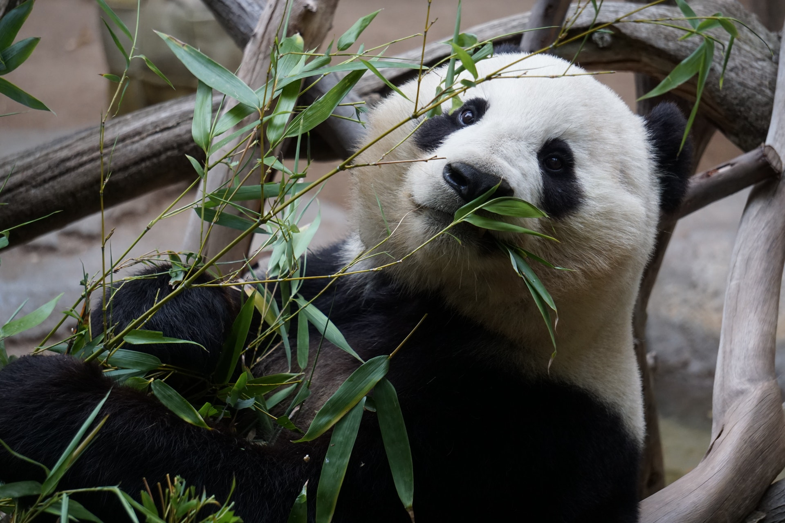

Kiesett Leo foga!
Leo beleharapott a Zebra steakbe és kiesett a bal eslő metsző foga!

Megszületett Csimpi!
Már a fákon ugrálgat, ami világszenzációkba megy!

Leesett a fáról a panda!
Sajnos Hugó lepottyant a fáról, de nem lett komolyabb baja!